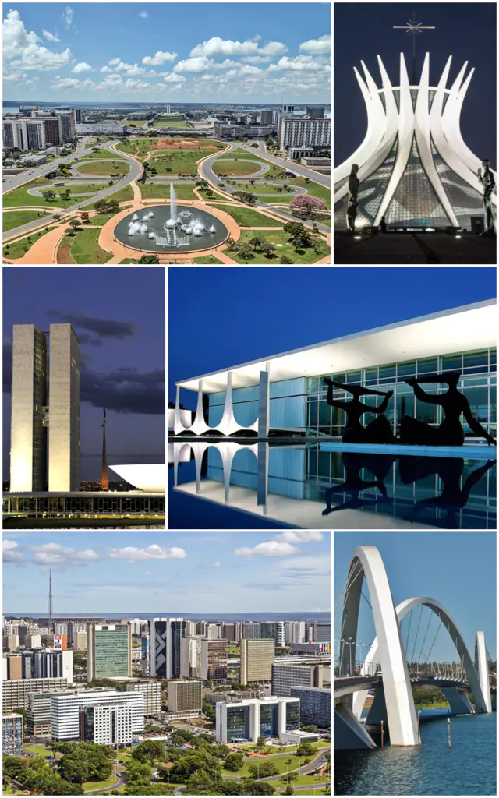

一点文章
把首都搬到一座尚不存在的城市 ，以及来自全球 13 个城市的新闻
又一个国家要转移它的首都，而且要搬去一座尚不存在的城市。
周一，印度尼西亚总统佐科·维多多（Joko Widodo）宣布迁都。新首都尚未命名，位于婆罗洲岛的加里曼丹，距离现今首都雅加达 1000 多公里，面积大约是雅加达的 3 倍。
新首都将承载这个国家的政府行政职能，而雅加达，将继续作为印尼的商业和金融中心。雅加达 1000 万居民中的大多数将留在此地，顺利的话，有大约 150 万公务员会在 2024 年左右迁去新首都。
佐科·维多多将迁都计划称为必然之举。他给出的迁都理由包括：促进更公平均衡发展的经济；并减轻雅加达和它所在的爪哇岛的负担——爪哇拥有印尼 60% 的人口和超过一半的经济活动，与此同时，雅加达面临严重的空气污染，由于没有足够的饮用水而长期抽水导致土地坍塌，这座城市还在下沉中。
政府希望在 2020 年完成总体规划、城市设计、建筑设计，再花三到四年的时间建造。
环保人士担心，新首都附近的生态会遭到破坏，加里曼丹是热带雨林的所在地，也是一些濒危物种的自然栖息地。防止腐败也是个问题。建造新都预计耗资 466 万亿卢比 (2340.9 亿人民币) 。政府称将制定计划，确保土地开发商和其他各方不会从中获利过多。
实际的问题可能比这更多。看看四年前宣布迁都的埃及就知道了。当时，埃及宣布将首都搬至距离开罗 45 公里外的新城——同样尚未命名（至今也未有命名），且百废待兴。埃及政府希望新都能缓解开罗的交通拥堵，并疏散部分人口。他们邀请到了以摩天大楼见长的美国建筑事务所 SOM 来主导新都项目，计划在市中心建造 21 座高楼，其中一座有 85 层高，将成为非洲之最。
四年过去了，这个计划中的“智慧城市”在开罗街头贴满地产商的广告：“通往一座新城市、一种新的生活方式、一个新的社区和一个新的全球吸引力中心的入口”，但项目在资金和人力上都遇到了问题。目前项目只完成了第一阶段，第二、第三阶段被推迟。
当然，更多的新都顺利建成、并完成了搬迁。 2005 年，内比都取代仰光成为缅甸首都。 这座新都的特点是面积非常大，而人口非常少。人口密度仅为每平方英里 339.5 人，伦敦的人口密度是它的近 43 倍。北京是它的 198 倍。
1960 年，巴西将首都从沿海城市里约热内卢搬到了内陆城市巴西利亚。事实上，巴西利亚是个从规划和建筑学意义上称得上伟大的城市，在 1987 年被联合国教科文组织认定为世界文化遗产。卢西奥·科斯塔（Lucio Costa）和奥斯卡·尼迈耶（Oscar Niemeyer）是它的规划师和市内大部分公共建筑的设计者，他们是柯布西耶的信徒，创造了一座现代城市。

图片来自 wikipedia
但此后，不管是在巴西利亚建成 50 周年之际、还是 2012 年尼迈耶去世之时，人们都发现，这座城市不像看上去这么理想。伦敦政治经济学院城市研究方向的教授 Ricky Burdett 在接受 BBC 采访时说：“问题不在于它是一个好城市还是一个坏城市——它就不是一个城市。 它没有城市的元素：凌乱的街道，住在商店楼上的人们，附近的办公室”，当你从城市上空俯瞰，“会看到霓虹灯都集中在一个区域，因为所有购物的地方都扎堆在那里（别处没有）”，“它有点像政府的办公园区。一到周四晚，人们就会跑去圣保罗和里约热内卢玩。”
如果想看到一座正常的城市，那要到巴西利亚的城郊和周边的卫星城。在那里也才能看到穷人。很遗憾，共产主义者尼迈耶当年规划中期待的平等并没有在巴西利亚出现。
不过 Ricky Burdett 提醒，这可能是城市在发展初期都会有的问题。“我们不要这么刻薄。再等个 200 年再看。”